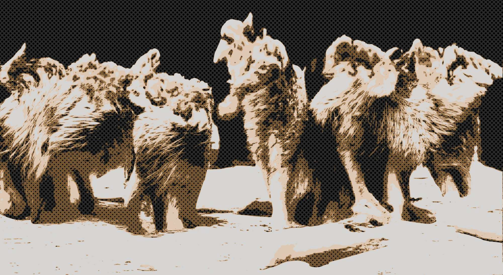

Голос стаи

Чуть солнце забрезжит
К оврагу иду
Любимую откапывать
— «Алкоголик и заначка»
Давайте покончим с человечеством. Окунемся в повседневную жизнь котят.
Итак, Бу-Бу зевнул и открыл глаза. Канарейки нигде не было. Бу-Бу посмотрел на открытую птичью клетку, потом на открытое окно. «Опять к своим улетела. Ночью будет заливаться похабными трелями, а утром выпьет всю воду из моей миски. Прошмандовка пернатая. Вот вырасту и сожру всю стаю». Вместо Канарейки в открытое окно влетела Большая Серая Совершенно Незнакомая Птица. Она опустилась на спинку стула и громко залаяла. Бу-Бу зажмурился и притворился, что спит. Обычный день.
Теперь на время возродим человечество.
Убийство адепта объединения «Цветущий Пень» произошло на улице прямо возле здания Органов. Мотив неизвестен. Органы предполагают заказное убийство — адепта дважды ударили трубой по башке. Второй удар явно контрольный. Труба осталась на месте преступления, а убийца куда-то ушел. Все свидетели на всякий случай привлечены к ответственности за дачу ложных показаний. Имеются достаточные основания предполагать, что они были подкуплены.
— Нужна эксгумация, — сказал Младший.
— Не торопись. Пусть сначала похоронят, — трезво рассудил Старший. — Традиции надо уважать.
Убитого осмотрели, достали из карманов документы и ключи от квартиры, приехали по месту регистрации, выломали дверь и услышали птичий лай.
— Похоже большая, — сказал Младший и достал из кобуры кастет.
— Сопротивление может оказать, — согласился Старший и тоже что-то откуда-то достал.
На цыпочках подкрались к двери в комнату и меееедленно открыли ее. На полу спал котенок, а на стуле сидела Большая Серая Совершенно Незнакомая Птица. Сидела вальяжно, закинув лапу на лапу. Посмотрела на вошедших и молвила скрипучим человечьим голосом:
— Не слишком удивлюсь, если вы вламываетесь просто так. Если нет, то учтите, что я знаю все обо всех. Но не разговариваю. Не умею, понимаете?
— Сдавай стаю, — сказал Старший. — Условкой отделаешься.
— А что шьем? — спросила Большая Серая Совершенно Незнакомая Птица.
— Заказное убийство трубой по башке.
— Дичь какая, — возмутилась Большая Серая Совершенно Незнакомая Птица. — Давайте так: даю показания на вожака стаи, как заказчика. Только не трубой убили, а заклевали.
— Про трубу забыли, — согласился Старший.
Дело можно было бы считать закрытым, если бы не одно «но» — на убитого ничего нет. Здесь появляется Человек в Странном Черном Пальто (для друзей, которых у него никогда не было, просто ЧеЭсЧеПэ) с экспертизой:
При обыске найдены записи убитого. «Бог» он всегда пишет в начале предложения, чтобы избежать написания в середине с маленькой буквы. Опасный еретик и теоретик объединения, из чего следует вывод об общественной опасности «Цветущего Пня» и любых упоминаний о нем.
Кроме того, экспертиза изучила материалы будущей эксгумации (обнаружены в файле под названием «Трупные пятна.txt», размещенном в открытом доступе). Есть основания полагать, что имело место самоубийство. Экспертиза считает, что убитый, мог покончить с собой в отместку убийце, которого сам и заказал.
Кроме того, на клювах задержанных птиц из стаи т.н. «Больших Серых» имеются следы яда. Процесс приготовления обнаруженного яда требует соблюдения древнего ритуала, который вызывает определенные коннотации с языческими религиями. Происхождение ритуала туманно, что позволяет говорить о смешении каких-то земных и космических корней. Экспертиза считает, что таким образом инициировались будущие агенты — видимо, для исполнения плана захвата планеты.
С другой стороны, остаются серьезные подозрения, что подобный яд содержится в крэке, хотя точно этого установить нельзя, поскольку никто из экспертов не пробовал крэк при исполнении.
Дело действительно чрезвычайно серьезное и продолжает вызывать общественный интерес. Выражаем надежду, что всех посадят. Заходите к нам каждую среду в 5:30 утра.
Администрация Культурного Центра в этом здании.
Человек в Странном Черном Пальто поглядел на часы — 5:25. Пять минут можно ничего не делать. Он подошел к окну, за которым было еще темно. Взглянул на небо – в нем не было видно ни звезд, ни луны. К чему на небе полная луна, думал он, разве что к какой-нибудь беде. Он снова вспомнил про давно задуманную статью про «Цветущего Пня». Как же ее назвать? Пусть будет «Статья 1147, часть 2».
На этом окончательно покончим с человечеством и посочувствуем Бу-Бу. Он хоть и остался единственным владельцем квартиры в центре, живым и на свободе, но прокормить себя не смог. Потому что лапки.